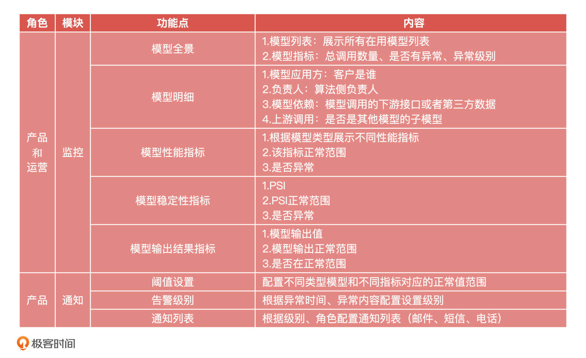

- 00 开篇词 你好，产品经理！你的未来价值壁垒在哪儿？.md.html
- 01 行业视角：产品经理眼中的人工智能.md.html
- 02 个人视角：成为AI产品经理，要先搞定这两个问题.md.html
- 03 技术视角：AI产品经理需要懂的技术全景图.md.html
- 04 过来人讲：成为AI产品经理的两条路径.md.html
- 05 通过一个 AI 产品的落地，掌握产品经理工作全流程.md.html
- 06 AI 模型的构建过程是怎样的？（上）.md.html
- 07 AI模型的构建过程是怎样的（下）.md.html
- 08 算法全景图：AI产品经理必须要懂的算法有哪些？.md.html
- 09 K近邻算法：机器学习入门必学算法.md.html
- 10 线性回归：教你预测，投放多少广告带来的收益最大.md.html
- 11 逻辑回归：如何预测用户是否会购买商品？.md.html
- 12 朴素贝叶斯：让AI告诉你，航班延误险该不该买？.md.html
- 13 决策树与随机森林：如何预测用户会不会违约？.md.html
- 14 支持向量机：怎么预测股票市场的涨与跌？.md.html
- 15 K-means 聚类算法：如何挖掘高价值用户？.md.html
- 16 深度学习：当今最火的机器学习技术，你一定要知道.md.html
- 17 模型评估：从一个失控的项目看优秀的产品经理如何评估AI模型？.md.html
- 18 核心技能：产品经理评估模型需要关注哪些指标？.md.html
- 19 模型性能评估（一）：从信用评分产品看什么是混淆矩阵？.md.html
- 20 模型性能评估（二）：从信用评分产品看什么是KS、AUC？.md.html
- 21 模型性能评估（三）：从股价预测产品看回归算法常用的评估指标.md.html
- 22 模型稳定性评估：如何用PSI来评估信用评分产品的稳定性？.md.html
- 23 模型监控：产品经理如何建设算法模型监控指标体系？.md.html
- 24 推荐类产品（一）：推荐系统产品经理的工作职责与必备技能.md.html
- 25 推荐类产品（二）：从0打造电商个性化推荐系统产品.md.html
- 26 预测类产品（一）：用户复购意向预测的底层逻辑是什么？.md.html
- 27 预测类产品（二）：从0打造一款预测用户复购意向的产品.md.html
- 28 预测类产品（三）：从0打造一款“大白信用评分产品”.md.html
- 29 自然语言处理产品：从0打造一款智能客服产品.md.html
- 30 AI产品经理，你该如何提升自己的价值？.md.html
- 31 AI产品经理面试，这些问题你必须会答！.md.html
- 春节加餐1 用户增长模型：怎么利用AI技术判断新渠道性价比？.md.html
- 春节加餐2 一次答疑，带你回顾模型评估的所有基础概念.md.html
- 期中周测试题 ，你做对了吗？.md.html
- 期中答疑 AI产品经理热门问题答疑合集.md.html
- 结束语 唯一不变的，就是变化本身！.md.html
- 捐赠
23 模型监控：产品经理如何建设算法模型监控指标体系？
你好，我是海丰。今天，我们来讲一讲算法模型监控指标体系的建设。
算法模型的监控指标体系（后面简称监控体系），就是将业务数据进行采集，同时用可视化图表展现给用户，并且提供相应的告警功能。
一般来说，当业务线初建的时候，我们可以不用考虑太多监控体系的需求，因为我们需要把精力放到怎么让业务“活下去”。但是当业务“活”下来之后，我们就要开始考虑搭建监控体系，让模型能够“活得更好”。那么，监控体系是怎么做到的呢？
具体来说，通过监控体系我们可以知道：
- 当前这条业务的现状和过去业务数据的对比
- 当前业务是否正常，可能存在的问题，并且通过这些问题追溯原因
- 未来业务的趋势，可能的完善方向
今天，我们就一起学习怎么去建设算法模型监控指标体系。
监控体系的三个核心问题
在规划一个监控系统的时候，有三个核心问题需要我们想清楚：
- 这个项目的业务背景是什么
- 这个监控体系是给谁解决问题的
- 你想要怎么解决问题
接下来，我们一个一个来看。
第一，你做这个项目的业务背景是什么？
做任何一件事之前，我们都要想清楚为什么要做，做监控体系之前也不例外。不同的业务背景意味着你对这个项目不同的解决路径，也意味着你对这个项目投入多少精力，这需要你在做这个项目之前考虑清楚。
一般来说，建设监控体系这个需求有可能是你作为产品经理在业务发展过程中发现的，也可能是你的老板或者客户提出来的。
如果是你自己打算做一个监控体系，那么你就要思考：
- 你为什么要做这个东西，现在是遇到了什么问题
- 你对这个问题的洞察怎么样
- 你的解决方案是什么，解决方案是不是只有监控体系这一个，还有没有其他的办法
举个例子，之前我们刚开始做AI项目的时候，根本没考虑过做监控体系，所以把很多精力都用在了模型的迭代和满足客户个性化需求上。突然有一天，客户反馈说，我们的评分产品全部返回默认值，经过排查我们才发现，这是模型底层依赖的数据源出了问题。解决这个问题之后，我们才决定去搭建一个监控体系。
所以在这个例子中，为了解决我们不能及时发现模型问题，比如无法了解当前调用数据的问题，就是我们做监控体系的背景。
如果是老板或者客户提出的，那么你要考虑他为什么要做这个。常见的原因有四个：
- 模型现在是否暴露出了一些问题，你没有发现
- 你的老板或者客户看到别人有监控体系，认为我们也要有
- 老板为了有一套系统去“占坑位”
- 老板打算把这套系统和模型能力一起打包做成一个解决方案，对B端销售
这个时候，老板/客户提出需要搭建一个模型产品监控体系就是我们的业务背景。
第二，你要给谁解决什么问题？
明确了业务背景，下一步，我们要明确监控体系是要给谁解决什么问题，这其实就是在明确我们要解决问题的价值是什么。具体来说你需要明确，你做的这个监控体系到底在解决谁的问题，解决的是什么问题。这听起来好像有些啰嗦，但这两个问题环环相扣，知道了目标用户，我们就能针对具体问题具体分析，得出这个监控体系的建设侧重点，做出令人满意的产品，因此把它们拆开来看还是很有必要的。
首先，怎么确定你的目标用户是谁呢？我们可以从需求提出的两个方面来思考。
如果这个需求是内部需求。比如说，你在过去的业务中发现模型出现了衰减，但是业务方不知道，这就会导致模型的最终效果不好，反馈延迟。这个时候，你的用户其实是你和你的业务方，因为你们需要尽早知道模型是否发生了异常。因此，这个监控体系的重点就要放在业务数据展示和告警提示上面。
再比如说，你的老板只是看别人有这个产品，认为你们也要有（有些大公司这种情况还是有的）。这个时候，你的用户就是你的老板，你要解决的就是“有没有”或者“占坑”的问题。因此，你的产品重点要放在业务展示上，展示的角度要以领导视角为主，甚至整个产品都可以做得比较简单，比如你可以先做一个MVP出来，解决“有没有”的问题。
如果这个需求是外部需求。比如说，你在B端市场销售模型时候，发现某家银行的风控业务人员想要更方便地进行模型的管理，也就是有一套一体化解决方案的需求。这个时候，你的用户是你的B端客户。因此，你的产品重点就要放到B端客户的业务痛点上，解决“卖得更好”的问题。
但是，有一点我们需要特别注意：很多时候，你的目标用户不只是真正使用你产品的用户。尤其是在B端场景下，在采购产品这件事情上，有决定权的往往不是真正使用者。
举个例子，像钉钉这样的软件，虽然使用者是我们这样的“打工人”，但真正具有购买决策权的往往是公司的HR或者CEO。如果你要做类似的软件，就要把他们当做你的用户，只有做出可以打动他们的功能，才能让你的产品具有竞争力。
明确了用户之后，你就可以去调研这些用户面对的问题是什么了。如果是内部业务线的需求，我们面对的问题可能就是，模型突然异常业务不能实时告警，并且及时处理。如果是ToB销售的业务需求，我们可能需要解决的问题，就是业务人员没有办法从全局角度管理和监控模型。
总的来说，要明确解决的问题是什么，需要你深入到业务中去挖掘用户的痛点，这也是产品经理最基础的要求。我给你的建议是，如果你做的是C端产品，你要把自己作为产品的用户，去深入体验产品、发现问题。如果你做的是B端产品，你要和业务的相关者深入沟通，最好和他们一起工作，看看他们的工作流程是怎么样的，有没有遇到什么问题，以及当前（没有产品的情况下啊）是怎么解决这些问题的。在这个过程中，你可以尝试利用“5W2H”的方法来问你的用户、问你自己。
第三，你要怎么解决问题？
在了解了背景，用户和要解决的问题之后，你需要做的就是去真正地解决问题了。至于具体该怎么做，你可以参考我接下来要讲的实际案例。
案例：ToB服务中模型监控体系搭建
下面，我就以我做过的一个监控体系为例，来给你讲一讲详细的过程。
当时，我还在一家创业公司，这个公司是给银行、互金机构提供风控模型的。它提供的产品形式是API接口，你可以理解为是，银行给我们一个用户的手机号，我们告诉银行这个用户的风险分是多少。银行会结合我们提供的风险分和其他的数据对用户的风险进行二次判断，来决定是否给用户进行放款。
我们遇到的问题是，有时候接口会突然报异常，模型效果会逐步下降，但是产品侧却抓不到这样的数据，模型侧也没有对模型进行监控。最后，客户反过来投诉我们，这对公司的口碑造成了影响。
结合刚才讲的三个核心问题，我们一个一个来回答。
首先是明确项目的业务背景，这个很容易得出，就是我们的内部数据监控和告警出现了问题。
其次是明确我们的目标用户，以及要解决的问题。我们的目标用户应该是产品经理自己，以及B端的商务运营同学。要解决的问题就是及时发现模型上的问题，在客户发现之前尽快修复、减少客诉。同时归纳这些问题，反哺模型和研发侧，对技术人员提出更高的要求。
最后就是去解决问题了。基于我们的背景和面对的问题，产品的定位就很清楚了：给产品和运营同学提供一套，能够查看所有模型，同时监控模型性能指标和稳定性指标，并且可以做到实时报警的工具。这个工具需要实现的功能列表梳理出来之后是下面这样的：

在这里，比较重要的监控功能点是模型全景，也就是监控首页或者说是总览页。虽然它不需要给出具体的模型指标，但要展示出都有哪些模型在用，调用过程中是否有异常，这方便我们根据异常下钻到明细信息中。
另一个重要的监控功能点就是模型性能指标和稳定性指标，这需要根据模型的类型，分别去展示模型近期的性能指标波动图，在图中需要展示模型的正常范围值。这个正常范围值，我们是根据实际业务定义的，比如我们对于KS要求比较高，所以把范围值定义在25-40之间。
除此之外，模型输出结果指标也是一个重要的监控功能点。为什么要监控模型的输出结果指标呢？我们之前就因为没监控模型输出而出现了大问题。当时，模型给到客户的产品输出范围是[0,100]，但模型底层依赖的某个数据未更新，这让模型输出了大于100的数据。同时，在工程部署时候，模型也没有对输出值进行二次处理，这就导致客户最终拿到的是不合理的结果。因此，我们不但要监控模型的输出，也要对不合理的输出及时告警。
不仅如此，我们还要注意不同指标的监控周期也不同。比如，我们的信用分模型是按月打分，所以，相应的KS、AUC、PSI指标也都要按月更新。这需要结合我们模型的实际情况进行设置。
确定好这些具体的功能列表之后，我们就可以进行后面的原型设计和PRD设计了。后面的流程就和我们一般的产品设计没有什么区别，我也就不再赘述了。
小结
这节课，我和你分享了从0到1去规划一个产品的思路，虽然这个产品是模型的监控体系，但是你在做其他产品设计的时候也完全可以参考这个套路。总的来说，我们要先明确项目的业务背景，然后明确你要给谁解决什么问题，最后再去设计解决方案。
在这里，我想和你强调的是，虽然具体的解决方案是一些能拿得出来的产出（如设计原型、PRD），好像最值得我们关注。但事实上，最需要我们关注的反而是我最开始提到的背景、用户和问题。这是因为，只有把做事情的目标搞清楚，才能让自己做出的事情是有价值的。否则，你的解决方案再优秀，只要没有解决用户的问题，它就是没有价值的。
课后讨论
假设，你现在是一个C端的产品经理，上游是多条业务线，下游是算法团队。如果这个时候你的老板让你做一个模型监控体系，你会怎么做？
期待在留言区看到你分享和答案，我们下节课见！
© 2019 - 2023 Liangliang Lee. Powered by gin and hexo-theme-book.